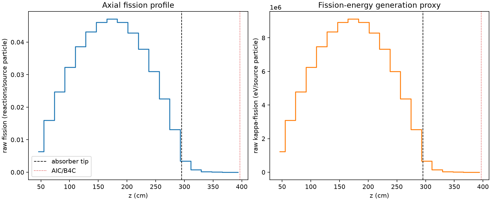
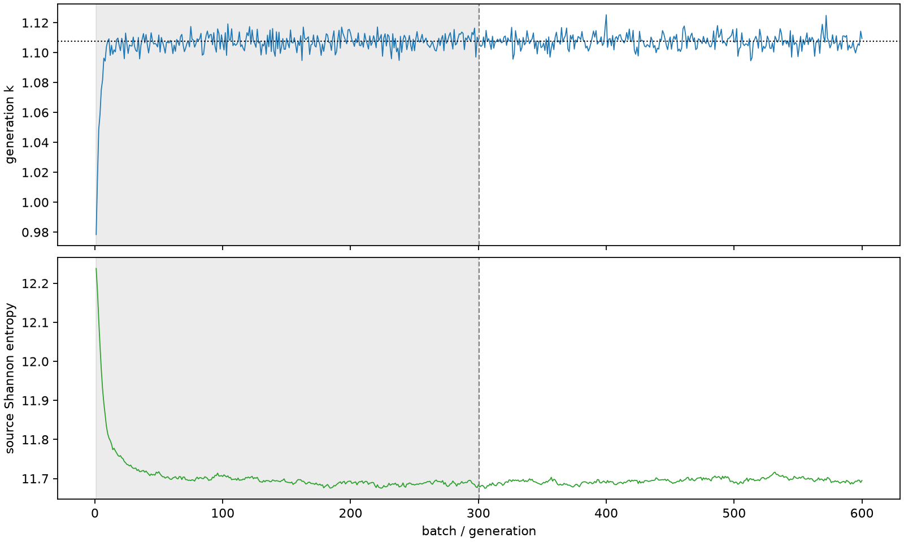

| field | value |
|---|---|
| experiment | V2-STAGE_256_OGRENCI_01-0030 |
| k | 1.1075930807238592 |
| MC standard error | 0.00018988207837054784 |
| seconds | 1023.3734290139982 |
| acceptance | not_assessed |
| convergence | review_required |
Completed is output integrity only; physical and statistical review required. Zero tallies do not prove zero production or zero uncertainty.
| diagnostic | value |
|---|---|
| geometric fuel voxels | 5280 |
| zero fission tally voxels | 0 |
| low signal fuel voxels | 733 |
| low signal fission share | 9.576583135462868e-05 |
| low signal kappa share | 9.581107164946562e-05 |
| important fission share | 0.950059115304059 |
| previous filter included | 4547 |
| duration estimate s | 1562.5173488400023 |
| actual minus estimate s | -539.1439198260041 |
| fission relative MC error | statistics |
|---|---|
| all_geometric_fuel | {"voxels": 5280, "positive_mean_voxels": 5280, "zero_mean_voxels": 0, "undefined_relative_error_voxels": 0, "median": 0.010169998614376442, "p95": 0.5030200256756173, "maximum": 0.9935842651782729} |
| low_signal | {"voxels": 733, "positive_mean_voxels": 733, "zero_mean_voxels": 0, "undefined_relative_error_voxels": 0, "median": 0.4206527817200928, "p95": 0.8454196978454978, "maximum": 0.9935842651782729} |
| important_95pct | {"voxels": 3194, "positive_mean_voxels": 3194, "zero_mean_voxels": 0, "undefined_relative_error_voxels": 0, "median": 0.008076284204639003, "p95": 0.012193445007359178, "maximum": 0.015995637625470297} |
| outside_previous_filter | {"voxels": 733, "positive_mean_voxels": 733, "zero_mean_voxels": 0, "undefined_relative_error_voxels": 0, "median": 0.4206527817200928, "p95": 0.8454196978454978, "maximum": 0.9935842651782729} |
| kappa_fission relative MC error | statistics |
|---|---|
| all_geometric_fuel | {"voxels": 5280, "positive_mean_voxels": 5280, "zero_mean_voxels": 0, "undefined_relative_error_voxels": 0, "median": 0.01015759860526077, "p95": 0.5024821428869494, "maximum": 0.9935837313301562} |
| low_signal | {"voxels": 733, "positive_mean_voxels": 733, "zero_mean_voxels": 0, "undefined_relative_error_voxels": 0, "median": 0.42013655980736037, "p95": 0.8448796224922807, "maximum": 0.9935837313301562} |
| important_95pct | {"voxels": 3194, "positive_mean_voxels": 3194, "zero_mean_voxels": 0, "undefined_relative_error_voxels": 0, "median": 0.008066114391489049, "p95": 0.012178273720837933, "maximum": 0.015973621268642935} |
| outside_previous_filter | {"voxels": 733, "positive_mean_voxels": 733, "zero_mean_voxels": 0, "undefined_relative_error_voxels": 0, "median": 0.42013655980736037, "p95": 0.8448796224922807, "maximum": 0.9935837313301562} |
| axial bin | fission share | kappa-fission share |
|---|---|---|
| 1 | 0.014077117079887796 | 0.014077761433403016 |
| 2 | 0.035359243656925686 | 0.03535917974877666 |
| 3 | 0.05461423529772014 | 0.054614132854586904 |
| 4 | 0.07146925968564144 | 0.07146900469951292 |
| 5 | 0.08533611799542669 | 0.08533573156290003 |
| 6 | 0.09542849190017472 | 0.09542802971161415 |
| 7 | 0.10187754048009579 | 0.10187720713876622 |
| 8 | 0.10414390486900943 | 0.10414358047597529 |
| 9 | 0.10192188479991947 | 0.10192130684761172 |
| 10 | 0.0948070339767367 | 0.09480682718372223 |
| 11 | 0.08372238623964466 | 0.08372210881337594 |
| 12 | 0.06850288537032191 | 0.06850249349334293 |
| 13 | 0.04987216478440034 | 0.049871821016006006 |
| 14 | 0.029085514366100747 | 0.02908556942868534 |
| 15 | 0.007653739047899847 | 0.0076558643472044935 |
| 16 | 0.0016325705271888538 | 0.001633258970100549 |
| 17 | 0.00038101921440836256 | 0.00038117423925737657 |
| 18 | 8.964555995192448e-05 | 8.968864250645291e-05 |
| 19 | 2.042362671162377e-05 | 2.0434998929713373e-05 |
| 20 | 4.821521833867979e-06 | 4.824393722184642e-06 |
Histories include the inactive-to-active transition at batch 300. kappa-fission approximates fission energy production, not total heat deposition.

